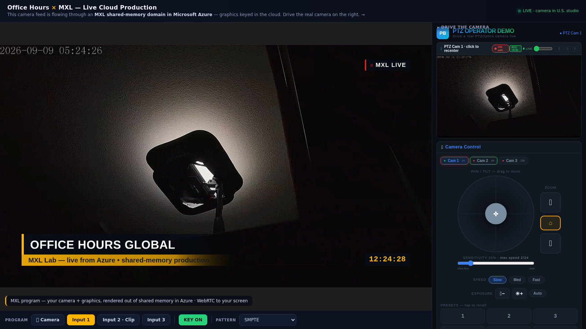
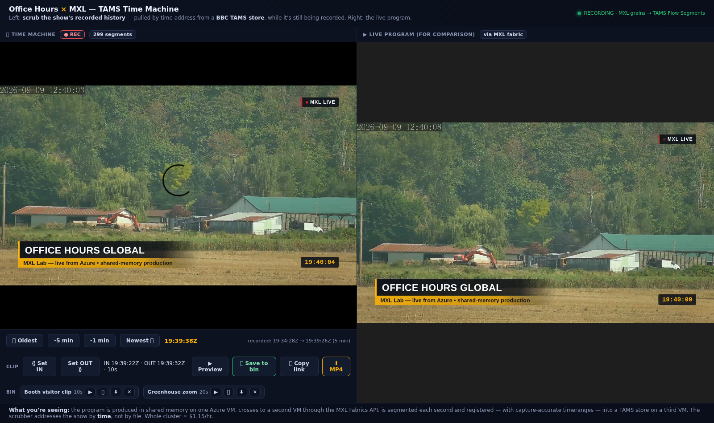

Memory is the router
Sources, program, previews and the multiview exist as discoverable flows in shared memory. A function can join without re-cabling the facility.
OPEN SOURCE / SOFTWARE-DEFINED LIVE PRODUCTION
A working exploration of a live production control room built around the Media eXchange Layer: real cameras, remote guests, playout, layouts, graphics, audio, multiview, recording and standard control — assembled as software on general-purpose cloud VMs.
Built in public by Guy Cochran / Office Hours Global. MIT licensed. Every number below comes from the running facility.
01 / THE IDEA
In a conventional chain, each box owns a stage of the signal. Here, functions read and write timestamped media grains in a common domain. The UI is not the switcher. The VM is not the switcher. The connected set of functions is the switcher.
Sources, program, previews and the multiview exist as discoverable flows in shared memory. A function can join without re-cabling the facility.
The Fabrics API carries raw grains between hosts. Contribution, production and storage can live on different machines — or different network islands.
The project exposes MXL flows through NMOS IS-04 / BCP-007-03 and has been driven from a physical Stream Deck through Bitfocus Companion.
02 / ARCHITECTURE
Select a view to trace what changes. The same program can stay live, cross hosts as raw grains, become a time-addressable archive, and surface to standard controllers.
30 grains/s sustained across hosts at approximately 1.3 Gbps for one 1080p30 v210 flow.
Live one-second segments, instant timerange clips and shared media objects with zero-copy clip registration.
IS-04 discovery, BCP-007-03 MXL tags, PGM/PVW tally and a Companion module for physical operation.
A seven-input selector, live layout compositor, program audio mixer and HTML5 keyer operate against flows in a single shared-memory domain.
03 / PROOF, NOT PROMISE
This is not a product announcement. It is a reproducible field project built ahead of and exercised during IBC 2026 week — including the failure modes, workarounds and measurements that make an early system useful to other engineers.



THE USEFUL PART
Reader lifecycle failures, repeat-last-grain wedges, timestamp alignment, stale ring slots, compositor bottlenecks, SRT latency and recovery cascades are written down with the fixes that held.
Read the findings04 / WHAT EXISTS TODAY
PGM/PVW buses, clean IDR-aware cuts and live source thumbnails.
Scan-to-join phone feeds land on an isolated host and cross via fabric.
2-up / PiP composition and HTML5 keying remain live as sources change.
Audio-follow-video, contributor adoption, per-input faders and mute.
Eight domain sources composed into a new peer flow and encoded once.
Record while live, scrub by time, register zero-copy clips and export MP4.
IS-04 resources tagged for MXL per AMWA BCP-007-03.
A Bitfocus Companion module puts cuts, tally and layouts on Stream Deck.
05 / REPRODUCE IT
The validated quickstart assembles the upstream media-function containers into a browser-watchable baseline: test pattern, playout, selector, HTML5 graphics and WebRTC output. Then add cameras, audio, contribution, layouts, multiview and TAMS one function at a time.
$ git clone https://github.com/
guycochran/mxl-cloud-production-demo
$ cd mxl-cloud-production-demo
$ sudo scripts/quickstart.sh
✓ MXL SWITCHER IS ON AIRBUILT ON OPEN WORK
The lab exists because other teams opened the architecture, SDK, media functions and orchestration. Start with their work; use this repository as field evidence and integration glue.
AN OPEN QUESTION, RUNNING AS CODE
Fork it. Reproduce it. Challenge the measurements. Replace a function. Bring a different controller. File what breaks. The point is not to define the answer alone — it is to make the conversation testable.